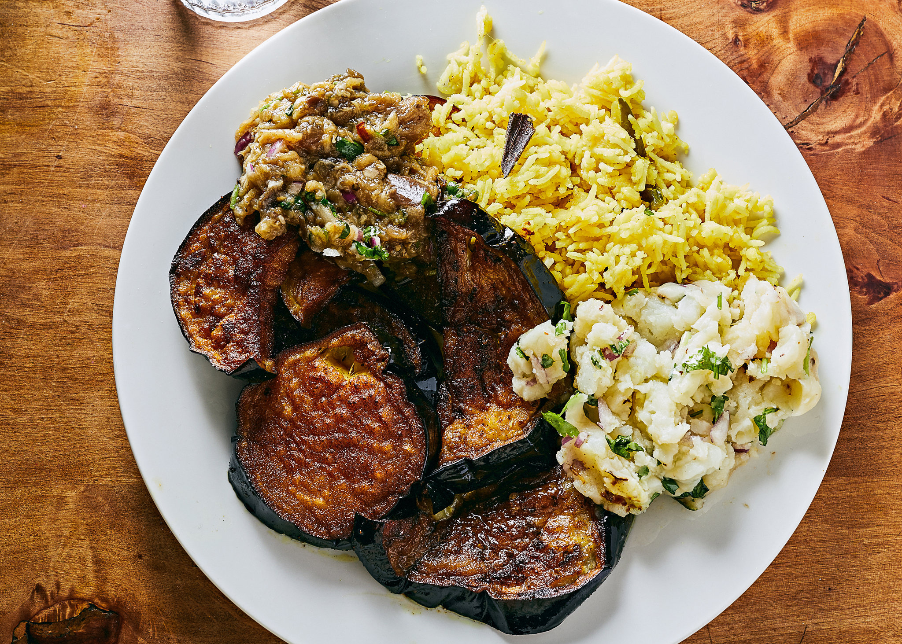

<!DOCTYPE html>
<html>
    <title>The Odin Recipe Project</title>
    <body>
        <h1>বাংলার রান্না</h1>
        <meta charset="UTF-8">
        
        <h2>Bangladeshi Food in its glory</h2>
        
        <p>List of recipes</p>
        <ui>
           <li><a href="../odin-recipes/recipes/biriani.html">বিরিয়ানি(Biryani)</a></li>
           <li><a href="../odin-recipes/recipes/halim.html">হালিমে(Halim)</a></li>
           <li><a href="../odin-recipes/recipes/borhani.html">বোরহানি(Borhani)</a></li>  
        </ui>
        </body>
    </html>